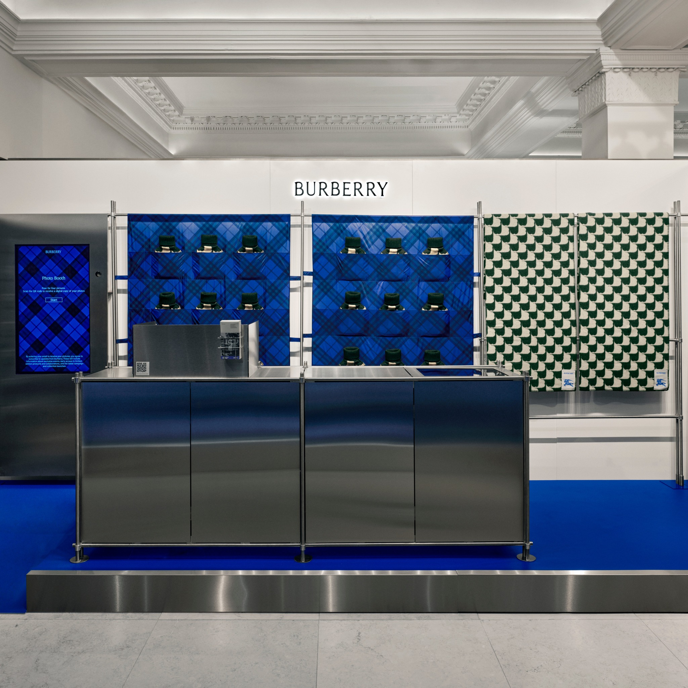

For Burberry's takeover of Harrods in 2024, the Creative Tech team were tasked with creating an in-store interactive experience and a way of bringing the collaboration to life for people who couldn't access the physical location. We produced an AI photobooth for customers to take branded selfies on in Harrods. We also used our extensive knowledge and prototypes of always-on-gaming platforms to collaborate with a 3rd party on the creation of a branded Burberry x Harrods world on Roblox.
I led the development of the photobooth experience from prototyping through to live deployment, focusing on reliability, speed, and polish under real-world conditions.. Using real-time AI background AIsegmentation, the booth allowed customers to take selfies on a Burberry Harrods Check pattern background. 4 images were transformed into looping GIFs and emailed to the customer. The experience was a hit — a blend of fun accessible luxury experience and data capture. We drove over5,000 new leads into Burberry’s CRM in under a month.
Technically, the installation required tight integration with the visual merchandising (VM) setup at Harrods We had some issues with static electricity and the complexities of integrating modern tech into a 175+ year old store. These were overcome by working closely with the install team to ensure everything—from camera positioning to lighting to the UX—was production-ready and frictionless for customers.
In parallel, I led a series of creative tech prototypes exploring persistent gaming platforms like The Sims, UEFN, and Roblox Studio. These internal experiments helped lay the groundwork for Burberry’s broader gaming strategy and contributed to the concept behind the Roblox Harrods experience, which was developed by Sawhorse. Together, these projects show how creative technology can deliver both short term impact (customer lead sign ups) and long-term brand strategy (next generation customer education via gaming).
